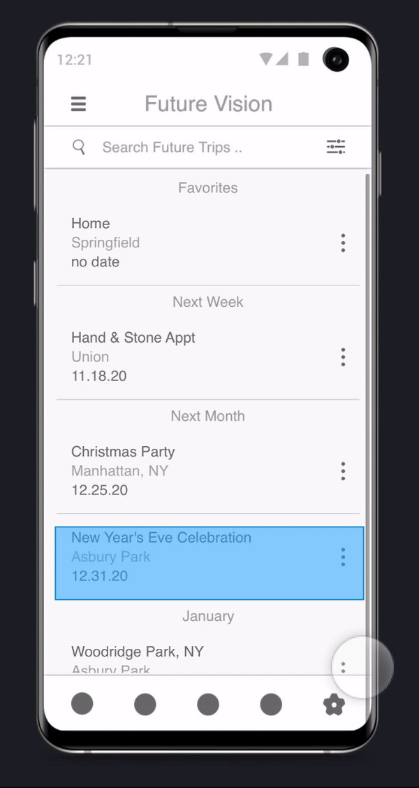

Future Vision
The act of going from Point A to Point B, especially in our modern times, can be met with anxiety and stress. Due to all the variables that may negatively affect people's travels, we designed a mobile app called Future Vision - Weather & Travel.
 Kevin Towner•3 minute read
Kevin Towner•3 minute read
Breakdown
Timeframe:
- • 9.20 - 12.20
- • 3 months
My Role:
- • UX Researcher
- • UI Designer
Case Study:
- • HTML
- • CSS
Tools:
- • Sketch
- • Invision
Introduction
Design thinking methods
Using research methods popular in design centered design, the group and I designed a prototype which aims to assist users in their travels. Future Vision was initially going to be a hub designed to address the many factors that can negatively affect people's travels.
Within the timeframe allowed, the group and I were able to use empathy, ideation, experimentation, and testing methods to produce a weather-based prototype.
Empathy
Assumption
The group surmised that traveling was simple, and unburdened by intense feelings prior to conducting participant interviews.
Interviews
The group learned planning for, and navigating between destinations causes anxiety and stress regardless of how extensive or brief the event is.
Problem statement
We developed a problem statement. "People are overwhelmed by the variables that can affect their travels"
Ideation & Groupware
 Stormboard & groupware
Stormboard & groupware
Brainstorming with Stormboard
We decided to brainstorm mobile application solutions. Specifically, utilizing brain-netting to spawn initial ideas, followed by further brainstorming to expand upon the initial ideas. The group then consolidated ideas, and simplified idea descriptions.
Final three ideas
We listed and described each idea, as well as recorded pros and cons for each on a shared document. To come up with three final ideas, we went through three rounds fo voting with the last round yielding "Travel Wallet," "A/R Realtime Map", and "Future Vision - Weather and Traffic".
Experiment & Test
Peer evaluation
Each group member created a prototype for their respective ideas, and conducted a peer reviewed walkthrough. Through evaluating each other's prototype we offered feedback, and created prototype test plans.
Obtaining meaningful feedback
The test sessions were facilitated via Zoom and started with an introduction, overview of the testing goals, explanation of interviewer and observer roles, and request for consent to record. Group 4 team members took turns in the interviewer and observer roles, with the interviewer role assumed by the team member that developed the prototype.
Test Summaries
Results summary
 Test tesults for all three prototypes
Test tesults for all three prototypes
Future Vision (example)
 Prototype run-through (example)UI Improvements
Weather screen
Provide clarity in presentation of arrival vs. departure location for weather details
Icon
Replace icon for screenshot feature, or improve feature to help users better understand what is happening
Popup duration
Increase duration of screenshot features popup for prototype use only